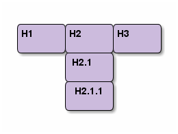
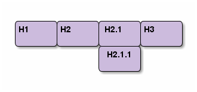

Download Reveal.js packages from here.
Extract Reveal.js folders from the downloaded zip file.
Note: Org-reveal relies on the Org-mode 8.0 export frame work. Pre-packaged org-mode may be out-of-date.
If not sure, use the freshest development codes from git repository.
$ git clone git://orgmode.org/org-mode.git
Follow the online instruction to build and install Org-mode.
Download latest Org-reveal package from the Org-reveal GitHub page.
Or clone the GitHub repository:
$ git clone https://github.com/yjwen/org-reveal.git
Copy ox-reveal.el to the Org-mode installation directory.
Add the following statement to your .emacs file.
(require 'ox-reveal)
Org-reveal must know where Reveal.js is on your computer before exporting Org contents.
The default location is ./reveal.js, relative to the Org file.
Change variable org-reveal-root 's value will change the location
globally. For example, add the following statement to your .emacs
file:
(setq org-reveal-root "d:/reveal.js")
By setting option REVEAL_ROOT, the location is only affected
within the Org file.
#+REVEAL_ROOT: d:/reveal.js
To wake-up Org-reveal now, type "M-x load-library", then type "ox-reveal".
Now you can export this manual into Reveal.js presentation by typing "C-c C-e R R".
Open the generated "Readme.html" in your browser and enjoy the cool slides.
Org-reveal maps each heading and its contents to one Reveal.js slides. Since Reveal.js arranges slides into a 2-dimentional matrix, Org-reveal use a HLevel value to decide map headings to hozirontal or vertical slides.
HLevel's default value is 1, means only level 1 headings are arranged horizontally, deeper headings are mapped to vertical slides below its parent level 1 heading.
Assume we have a simple Org file as below:
* H1 * H2 ** H2.1 *** H2.1.1 * H3
If HLevel is 1, the default value, headings H2.1 and H2.1.1 will be mapping to vertical slides below the slides of heading H2.

If HLevel is changed to 2, slide of heading H2.1 will be changed to the main hozirontal queue, and slide of heading H2.1.1 will be a vertical slide below it.

org-reveal-hlevel's value to set HLevel globally..emacs file.
(setq org-reveal-hlevel 2)
REVEAL_HLEVEL.
#+REVEAL_HLEVEL 2
Themes and transition styles are set globally throughout the whole
file by setting options REVEAL_THEME and REVEAL_TRANS.
For an example, please check the heading part of this document.
Available themes can be found in "css/theme/" in the reveal.js directory.
Available transitions are: default|cube|page|concave|zoom|linear|fade|none.
Make contents fragmented (show up one-by-one) by setting option ATTR_REVEAL with
property ":frag frag-style", as illustrated below.
Paragraphs can be fragmented.
Items can be fragmented, too.
Availabe fragment styles are:
Set property reveal_data_state to headings to change this slide's
display style, as illustrated above.
Availabe data states are: alert|blackout|soothe.
Reveal.js provides several plug-in functions.
Each plug-ins can be set on/off by adding #+OPTIONS tags or
settinng custom variables.
#+OPTIONS tags:reveal_control, reveal_progress, reveal_history,
reveal_center
org-reveal-control, org-reveal-progress,
org-reveal-history, org-reveal-center
For an example, please refer to the heading part of this document.
Org-reveal use Org-Babel to highlight source codes.
Codes copied from Haskell Wiki.
fibs = 0 : 1 : next fibs where next (a : t@(b:_)) = (a+b) : next t
If you saw odd indentation, please set variable org-html-indent
to nil and export again.
Courtesy to:
the powerfull Org-mode,
and the impressive Reveal.js